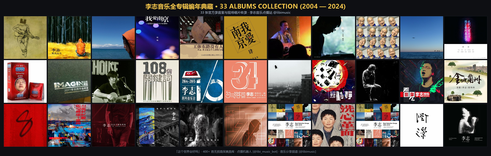

歌词沉浸流
点击唱片翻回 ↻
纯器乐演奏曲目
闭上双眼，聆听旋律在空气中流淌
闭上双眼，聆听旋律在空气中流淌
35张专辑 · 529首编年典藏

本馆收录李志 2004～2024 二十年创作生涯全部 35 张考证唱片与 529 首全曲目，严格按四大类别与编年归档：
正规母带录音室制作典藏。《被禁忌的游戏》《梵高先生》《这个世界会好吗》《我爱南京》《你好，郑州》《F》《1701》《在每一条伤心的应天大街上》《新世纪的怪儿》等。
大编制管弦、电音与跨年工体经典演出现场。《勾芡》《降噪》《动静》《工体东路》《看见》《北京不高兴》《爵士李志》《电音李志》《装B》《二零一三》等。
P-VINE 海外授权发行与东瀛现场。《Ballads (2017 东京)》《Selected Songs》《Best Selection (洗心革面)》及东京独奏现场。
早期珍贵小剧场实录、乐迷私藏与不完全合辑。《单飞》《动静合辑》《吉他弹唱未发表作品》《卡夫卡的不完全李志》等民间绝版。
贯穿南京（热河、山阴路、定西）、郑州、成都等地理记忆，从 2004 早期毛糙弹唱到 2024 近期重制，完整呈现一代独立民谣史诗。